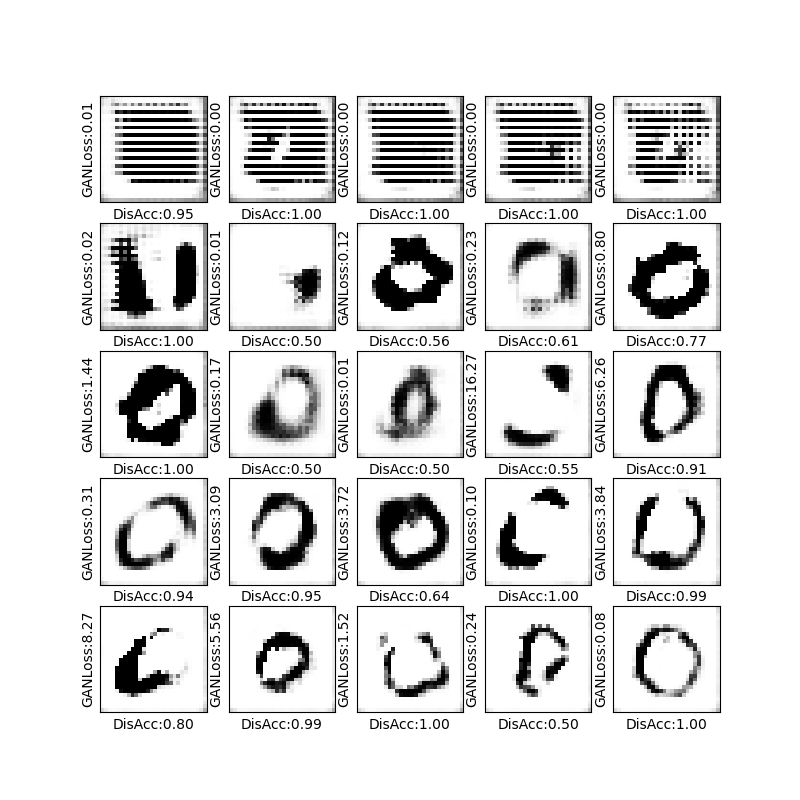

Generating Synthesized data with DeepFake
The main goal of this project was to implement a Deep Convolutional Generative Adversarial Network (DCGAN)
and train it to generate realistic looking synthesized images.
The project was accomplished by following a guided project offered by Coursera.
Project's Details
About the project
Implementing a Deep Convolutional Generative Adversarial Network (DCGAN) and training it to generate realistic
looking synthesized images. The term deep fake is associated with synthetic data, which is similar to Real
World Observed data, often with synthesized images. Through the project, we will build and implement DCGAN
model. Then, the model will be trained to generate sythetic images similar to hand written digit zero from
the MNIST dataset.
Architecture of DCGAN
The DCGAN model has two parts. The first one is the artist or the generator, and the second part is the discriminator.
The idea is to train the discriminator on real data as well as on images generated by the generator or the artist, to distinguish fake from real data.
Initially, the generated images don't look like the real images at all, and they will be essentially noise.
Thus, it will be easy for the discriminator to distinguishe them from real images.
After training the network for a while, the artist will become better at generating the images, and accordiginally it will be harder for the discriminator to recognize fake images.
Once the discriminator is fooled, and since it's part of the network that we're training, it will also start to get better at recognizing the fake images.
So there's this adversarial relationship between the artist and the critic. More and more, the artist gets better at creating fake images which look like real images. And the critic, in turn, gets better at recognizing those fake images.
So, after a few iterations, we'll start to see images which are reasonably close to how the real data looks like.
Results examples
In the following figure we can see how with more iterations the artist gets better at creating fake images which look like real images.
By observing the accuracies of the dicriminator and the generator, we can note that, if the accuracy of dicriminator is high then the discriminator is doing well,
but as the model train more and more, this will reflect the generator work too.
When the generator does well, the discriminator accuracy will get reduced.

Skills covered in this project
- Skills
Deep Learning, Deepfakes, GAN, Machine Learning.
- Programing language
Python.
- Tools, Libraries, and Softwares
Keras.